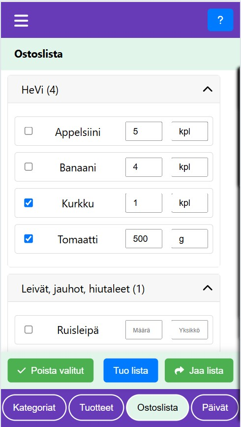

Seijan koodailua
Olen full stack koodari ja monenmoista tekniikkaa on vuosien saatossa tullut käytettyä.
Tilanteen niin salliessa opettelen uusia tekniikoita ja koodailen omia projekteja.
Tällä hetkellä on alkutekijöissään sovellus, jolla on tarkoitus hallinnoida omia
labratuloksia omalla koneella. Kaksi eri projektia on aiheesta, 2:lla eri tekiikalla. Näistä koodit ja kuvaukset löytyvät:
Labra, (Laravel-PHP-React)
github
Labra, (Node-TypeScript-React)
github
ja Youtube soittolista:
Labra, Youtube
. Pidempään kehityksen alla on kuitenkin ollut ostoslista sovellus, josta alla lisää:
"Ostokseni" -sovellus
"My Shopping" application
Sovellus toimii ilman nettiyhteyttä. Se on suunniteltu käytettäväksi kännykällä, mutta
toimii myös pöytäkoneella ja tabletilla. Voit käyttää sitä suoraan seuraavasta osoitteesta:
https://seijalauronen.github.io/ostokseni/
tai avaamalla linkistä:
Ostokseni sovellus.
Sovelluksen ideana on saada tehtyä räätälöity ostoslista:
Kategoriat voidaan järjestää raahaamalla
Tuotteet kategorioittain, värikoodit käytössä

Tuotteet ostoslistalla
Päiväkohtaisia suunnitelmia
Valikosta toimintoja, asetuksia, tietoja
- Tuotteet voidaan luokitella kategorioihin ja kategoriat järjestää siihen järjestykseen, jossa tuotteet kaupassa halutaan kerätä.
- Tuotteita ei tarvitse tallentaa sovellukseen kuin kerran, ostosten keräämisen jälkeen ne voidaan poistaa ostoslistalta, mutta ovat valittavissa taas uudestaan tuotelistalta.
- Sovellus voi toimia dieettiapurina: lisäpiirteenä voidaan ottaa käyttöön värikoodit, joilla jokainen tuote voidaan merkata 1 - 4 värillä. Värille voi kukin antaa oman merkityksensä ja värien perusteella voidaan tuotteita suodattaa näkyviin.
- Niin ikään lisäpiirteenä voidaan ottaa käyttöön päiväkohtaisten (ateria)suunnitelmien tekeminen.
4 minuutin esittelyvideo (27.7.2025):
Jos upotus ei näy, voit avata esittelyvideon tästä: Esittelyvideo
Uusia piirteitä putkahtelee sitä mukaa kun koodaus edistyy, joten videoilla ei ole niitä kaikkia.
Erityisesti eri ruokavalioiden noudattamiseen on tarkoitus kehittää (ja on jo kehitettykin)
lisäpiirteitä.
Asetuksista voi säätää monia ominaisuuksia, kuinka sovellusta haluaa käyttää.
Ohjelmaa voi käyttää asentamattakin, suoraan linkistä, mutta jos haluat asentaa sen, tässä siitä ohjevideo (Chromelle): Asennusvideo
Ohjelmaa voi käyttää asentamattakin, suoraan linkistä, mutta jos haluat asentaa sen, tässä siitä ohjevideo (Chromelle): Asennusvideo
Muita videoita:
• Version päivitys uusimpaan • Värikoodien käyttö esimerkiksi dieettiapurina • Tietojen kopiointi kaverille • Tuotteiden luokittelu ja annoskoko • Lisäominaisuus: Päiväsuunnitelmien teko • Päiväsuunnitelmien "väärinkäyttö" ruokavinkkien tallennukseen • Tallennustila • Tietojen kopiointi tekstistä • Puheen tunnistus tuotehaussa • Päivän suunnittelu ja toteutuksen seuraaminen
•• Koko soittolista ••
• Version päivitys uusimpaan • Värikoodien käyttö esimerkiksi dieettiapurina • Tietojen kopiointi kaverille • Tuotteiden luokittelu ja annoskoko • Lisäominaisuus: Päiväsuunnitelmien teko • Päiväsuunnitelmien "väärinkäyttö" ruokavinkkien tallennukseen • Tallennustila • Tietojen kopiointi tekstistä • Puheen tunnistus tuotehaussa • Päivän suunnittelu ja toteutuksen seuraaminen
•• Koko soittolista ••
Tietojen tallennus
Data storage
Tiedot tallennetaan käyttämäsi selaimen muistiin laitteellesi.
Jos käytät eri selaimia samalla laitteella (esim. Chrome ja Firefox), ne eivät näe toistensa tietoja.
Voit kuitenkin kopioida tiedot selaimesta toiseen käyttämällä "Vie tiedot", "Tuo tiedot" toimintoja.
Tekniikasta
About the Technology
Sovellus on koodattu Reactilla tekoälyä käyttäen ja se on PWA (Progressive Web Application)
sovellus. Koodit löytyvät osoitteesta
https://github.com/SeijaLauronen/ostokseni
ja linkistä: Ostokseni sovelluksen
koodit.
Sovellus on vielä keskeneräinen, mutta sitä voi jo käyttää. Periaatteessa tiedot säilyvät selaimen muistissa (IndexedDB), mutta kannattaa käyttää varmuuskopiointiominaisuutta, koska selainten toiminnoilla tiedot voidaan tyhjentää.
Sovellus on vielä keskeneräinen, mutta sitä voi jo käyttää. Periaatteessa tiedot säilyvät selaimen muistissa (IndexedDB), mutta kannattaa käyttää varmuuskopiointiominaisuutta, koska selainten toiminnoilla tiedot voidaan tyhjentää.
Kävijälaskuri: